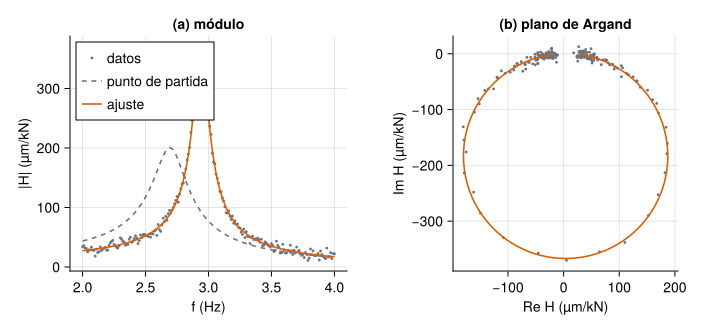
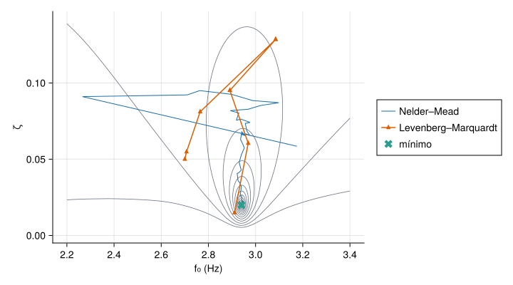
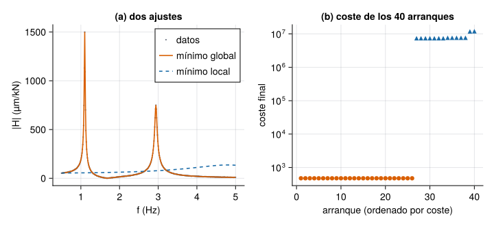
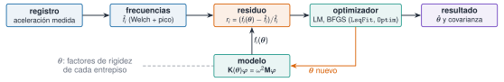

Casi todo lo que se hace con datos de vibraciones acaba en la misma pregunta: ¿qué valores de los parámetros del modelo hacen que este se parezca más a lo medido? El amortiguamiento de un modo, la rigidez de un entrepiso, la masa de una planta no se miden directamente: se estiman minimizando una función de coste que mide la distancia entre modelo y datos. Esta unidad enseña a plantear ese problema, a resolverlo con Optim.jl y LsqFit.jl, a elegir el método, a no caer en un mínimo local, y a cuantificar la incertidumbre del resultado, con dos aplicaciones de la vía M: el ajuste de la FRF de un oscilador de 1 GDL (M7) y la actualización de un modelo de edificio con frecuencias medidas (M6.7).
NotaCómo se lee esta unidad
Tiempo orientativo: 120 minutos. Objetivos (5), teoría en cinco píldoras (35), práctica guiada (45), «Pídeselo a Claude» (15), ejercicios (15) y cierre (5). Los datos de la FRF son sintéticos (se generan en la página, con semilla fija y un ruido conocido, para saber la respuesta correcta); los de la actualización del modelo son los registros sintéticos del edificio de tres plantas de datos/sinteticos/. Ninguno es una medida de una estructura real. Se usan Optim.jl, LsqFit.jl y las funciones de Resonancia.jl.
Objetivos y prerrequisitos
Objetivos. Al terminar esta unidad sabrás:
plantear un ajuste como minimización de una función de coste y resolverlo con optimize (Optim.jl) y con curve_fit (LsqFit.jl);
ajustar la FRF de un oscilador de 1 GDL por mínimos cuadrados no lineales y leer la covarianza y los intervalos de los parámetros;
comparar Nelder–Mead, BFGS, L-BFGS y Levenberg–Marquardt por evaluaciones, precisión y robustez, y saber por qué importa reescalar los parámetros;
detectar mínimos locales con una estrategia multi-start, imponer cotas y comprobar la sensibilidad a la inicialización;
actualizar la rigidez de un modelo de edificio con frecuencias medidas y dar el resultado con su incertidumbre.
Prerrequisitos. El curso no los impone en el temario; conviene J3.3 (mínimos cuadrados lineales y condicionamiento) y J3.5 (diferenciación automática), y haber visto en M6.7 la idea de model updating.
Reparto con otras unidades. La teoría de la identificación modal está en M7 y la del model updating, en M6.7. Aquí se implementa y se comprueba con cifras.
Teoría breve
NotaUn poco de historia: el algoritmo de Levenberg y Marquardt
El método que hoy se usa por defecto para ajustar curvas por mínimos cuadrados no lineales lleva dos nombres. Kenneth Levenberg lo publicó en 1944 en el Quarterly of Applied Mathematics, y Donald Marquardt lo presentó de nuevo en 1963 en el Journal of the Society for Industrial and Applied Mathematicscon el artículo «An algorithm for least-squares estimation of nonlinear parameters»; en él reconoce, a indicación de un revisor, el trabajo anterior de Levenberg. Por eso se llama «Levenberg–Marquardt» (LM) y no «Marquardt» a secas.
Fuentes: Wikipedia, «Levenberg–Marquardt algorithm» y el DOI del artículo de Marquardt. Los datos bibliográficos se han comprobado en fuentes secundarias, no en los originales; el título exacto varía entre fuentes. Consultado el 27-10-2026.
J3.7.1 El problema: minimizar un coste
Un problema de optimización busca los parámetros \(\boldsymbol\theta\) que minimizan una función de coste \(J(\boldsymbol\theta)\). En el ajuste de modelos, el coste es la suma de los cuadrados de los residuos (la diferencia entre lo medido y lo que predice el modelo):
Si \(g\) es lineal en \(\boldsymbol\theta\) se resuelve con un solo paso de álgebra lineal (J3.3). Si no lo es, hay que iterar: partir de un valor inicial \(\boldsymbol\theta_0\) y mejorarlo paso a paso. Los métodos se distinguen por la información que usan: solo valores de \(J\) (Nelder–Mead), también el gradiente (BFGS y L-BFGS, cuasi-Newton), o la estructura de suma de cuadrados con el jacobiano de los residuos (Levenberg–Marquardt). Ninguno garantiza el mínimo global: encuentran un mínimo local, y cuál depende del punto de partida.
El ejemplo de la unidad es un oscilador de 1 GDL (masa \(2\cdot10^{5}\) kg, \(f_0=2{,}94\) Hz y \(\zeta=2\ \%\), como el segundo modo del edificio), cuya receptancia (desplazamiento por unidad de fuerza) es
implementada en frf_1gdl de Resonancia.jl. Se simulan 201 frecuencias entre 2 y 4 Hz con ruido gaussiano de 5 µm/kN en la parte real y en la imaginaria, y se minimiza ecuación 1 con Optim.jl:
Ver el código
m_osc, f0_ver, ζ_ver =2.0e5, 2.94, 0.02A_ver =1e9/ (m_osc * (2π * f0_ver)^2) # A = 1/k en µm/kNf =collect(range(2.0, 4.0, length=201))rng =MersenneTwister(7)H_ver =frf_1gdl.(f, f0_ver, ζ_ver, A_ver)y =vcat(real.(H_ver), imag.(H_ver)) .+5.0.*randn(rng, 2*length(f)) # parte real e imaginaria apiladascoste(p) =sum(abs2, frf_1gdl_ri(f, p) .- y) # p = [f₀, ζ, A]p0 = [2.7, 0.05, 20.0] # punto de partidar =optimize(coste, p0, NelderMead())(A_verdadera =round(A_ver, digits=2), coste_inicial =round(coste(p0)), minimizador =round.(Optim.minimizer(r), digits=4), coste_final =round(Optim.minimum(r), digits=1), converge = Optim.converged(r), iteraciones = Optim.iterations(r))
El coste baja de unos \(2{,}7\cdot10^{6}\) a \(9\,491\) y los parámetros caen cerca de los verdaderos (2,94; 0,02 y 14,65). Optim.converged dice que se cumplió el criterio de parada, no que el resultado sea el mínimo global ni que sea correcto (se verá en J3.7.3).
Si Optim.converged(r) devuelve true, el resultado es el mínimo global de la función de coste.
Falso. Indica que el algoritmo se detuvo por un criterio de parada (gradiente o cambio pequeños). Puede ser un mínimo local, un punto estacionario o incluso un resultado sin sentido físico.
Los datos tienen \(N=402\) valores (201 reales y 201 imaginarios) con ruido de \(\sigma=5\) µm/kN, y el modelo tiene 3 parámetros. Si el modelo es correcto, el coste mínimo es, en media, \(\sigma^2(N-3)\). ¿Cuánto vale?
\(25\cdot399=9975\). El valor obtenido (9 491) es un 5 % menor, dentro de la variación aleatoria (la desviación típica del coste mínimo es del orden del 7 %). Si el coste fuese mucho mayor, el modelo sería insuficiente o el optimizador se habría atascado.
J3.7.2 Mínimos cuadrados no lineales con LsqFit
LsqFit.jl está hecho para ecuación 1: curve_fit(modelo, x, y, p0) ajusta y ≈ modelo(x, p) con Levenberg–Marquardt, que mezcla Gauss–Newton (rápido cerca del mínimo) con descenso por gradiente (seguro lejos de él). Además de los parámetros, da su incertidumbre: con los residuos \(\mathbf r\) y el jacobiano \(\mathbf J\) del modelo en la solución, la covarianza de los parámetros es
donde \(p\) es el número de parámetros. Sus raíces diagonales son los errores típicos (stderror) y se obtienen intervalos de confianza con confint. Con la FRF de arriba:
Ver el código
fit =curve_fit(frf_1gdl_ri, f, y, p0)ee, ic =stderror(fit), confint(fit; level=0.95)nombres, verdad, dec = ["f₀ (Hz)", "ζ", "A (µm/kN)"], [f0_ver, ζ_ver, A_ver], [4, 5, 2]filas = ["| $(nombres[i]) | $(coma(verdad[i], d=dec[i])) | $(coma(coef(fit)[i], d=dec[i])) | $(coma(ee[i], d=dec[i] +1)) | [$(coma(ic[i][1], d=dec[i])); $(coma(ic[i][2], d=dec[i]))] |" for i in1:3]println("| parámetro | verdadero | estimado | error típico | IC 95 % |\n|---|---|---|---|---|\n"*join(filas, "\n"))
Tabla 1: Ajuste de la FRF por Levenberg–Marquardt con curve_fit. Los tres valores verdaderos caen dentro de su intervalo de confianza del 95 %.
parámetro
verdadero
estimado
error típico
IC 95 %
f₀ (Hz)
2,9400
2,9404
0,00026
[2,9399; 2,9409]
ζ
0,02000
0,01994
0,000126
[0,01969; 0,02018]
A (µm/kN)
14,65
14,63
0,066
[14,50; 14,76]
Ver el código
Σ =vcov(fit)R = Σ ./ (ee * ee') # matriz de correlación de los parámetros(sigma_residual =round(sqrt(mse(fit)), digits=3), grados_de_libertad =dof(fit), correlacion_f0_zeta =round(R[1, 2], digits=2), correlacion_zeta_A =round(R[2, 3], digits=2))
El residuo \(\hat\sigma=4{,}88\) µm/kN recupera el ruido simulado (5), con \(N-p=399\) grados de libertad. Y la correlación entre \(\zeta\) y \(A\) es de \(0{,}72\): no se pueden estimar los dos con independencia, porque un pico algo más ancho y algo más alto se parece a otro más estrecho y más bajo. Mirar la matriz de correlación, y no solo los errores típicos, es lo que avisa de parámetros mal separados.
Ver el código
let n =length(f) Hd =complex.(y[1:n], y[n+1:end]) ff =range(2.0, 4.0, length=801) # rejilla fina para dibujar las curvas Hini, Hfit =frf_1gdl.(ff, p0[1], p0[2], p0[3]), frf_1gdl.(ff, coef(fit)...) fig =Figure(size=(720, 330)) ax1 =Axis(fig[1, 1], xlabel="f (Hz)", ylabel="|H| (µm/kN)", title="(a) módulo")scatter!(ax1, f, abs.(Hd), color=GRIS, markersize=4, label="datos")lines!(ax1, ff, abs.(Hini), color=GRIS, linestyle=:dash, label="punto de partida")lines!(ax1, ff, abs.(Hfit), color=NARANJA, label="ajuste")axislegend(ax1, position=:lt) ax2 =Axis(fig[1, 2], xlabel="Re H (µm/kN)", ylabel="Im H (µm/kN)", title="(b) plano de Argand", aspect=DataAspect())scatter!(ax2, real.(Hd), imag.(Hd), color=GRIS, markersize=4)lines!(ax2, real.(Hfit), imag.(Hfit), color=NARANJA) figend

Figura 1: Ajuste de la FRF de un oscilador de 1 GDL. (a) Módulo de los 201 datos (gris), curva del punto de partida (discontinua) y curva ajustada (naranja). (b) Los mismos datos en el plano de Argand (parte real frente a imaginaria): la FRF de 1 GDL traza una circunferencia, que es lo que ajusta el método circle-fit de M7.2.
Cuidado con la interpretación: el error típico de LsqFit mide solo el efecto del ruido aleatorio si el modelo es correcto. No incluye el error sistemático (un modelo equivocado, una mala calibración) ni garantiza que se haya llegado al mínimo global.
¿Cuántos grados de libertad tiene la estimación de \(\hat\sigma^2\) en el ajuste de la FRF (402 datos, 3 parámetros)?
\(N-p=402-3=399\) (dof(fit)).
El error típico que da stderror(fit) incluye el error sistemático por usar un modelo equivocado, además del ruido.
Falso. Se calcula a partir de la dispersión de los residuos y del jacobiano, y supone que el modelo es correcto. Un modelo equivocado puede dar errores típicos pequeños y parámetros sesgados.
J3.7.3 Comparar métodos y reescalar
Los métodos de Optim.jl se llaman con el mismo optimize(f, x0, método). Se compara aquí el coste de cada uno (número de evaluaciones del coste, incluidas las que hacen las diferencias finitas o la diferenciación automática) en el mismo problema y desde el mismo punto de partida. Antes se reescalan los parámetros a magnitudes parecidas (\(q=p/p_{\text{típico}}\)): \(f_0\sim3\), \(\zeta\sim0{,}02\) y \(A\sim15\) difieren en tres órdenes de magnitud, y los métodos con gradiente lo sufren.
Tabla 2: Cinco métodos sobre el mismo ajuste de FRF, con los parámetros reescalados, y BFGS sin reescalar. El coste mínimo es 9 491,1 en todas las filas correctas.
método
derivadas
evaluaciones
f₀ (Hz)
coste final
¿converge?
Nelder–Mead
ninguna
270
2,9404
9491,1
sí
BFGS
dif. finitas
1086
-2,9404
9491,1
sí
BFGS
automática
142
-2,9404
9491,1
sí
L-BFGS
automática
198
-2,9404
9491,1
sí
Levenberg–Marquardt
automática
29
2,9404
9491,1
sí
BFGS sin reescalar
dif. finitas
533
244290
2,16e+06
sí
Se leen tres cosas. (1) Levenberg–Marquardt necesita unas 30 evaluaciones, frente a 142–270 de Nelder–Mead y de los métodos con derivadas automáticas (y 1 086 con diferencias finitas): aprovecha que el coste es una suma de cuadrados. Nelder–Mead no usa derivadas (más robusto a ruido, mucho más lento en cuanto hay más de unos pocos parámetros). (2) La diferenciación automática cuesta unas 7,6 veces menos evaluaciones que las diferencias finitas en BFGS (142 frente a 1 086). (3) Las filas BFGS y L-BFGS dan \(f_0=-2{,}9404\) Hz: la FRF solo depende de \((f_0,\zeta)\) a través de \(f/f_0\) y \(\zeta f/f_0\), así que \((-f_0,-\zeta)\) es exactamente igual de bueno; es un mínimo equivalente sin sentido físico, y se evita con cotas (J3.7.4). Y la última fila es la lección de la escala: BFGS sin reescalar «converge» a \(f_0=244\,290\) Hz con un coste 230 veces mayor. El indicador de convergencia no se enteró.
Ver el código
let A_aj =coef(fit)[3] f0s, zs =range(2.2, 3.4, length=241), range(0.002, 0.14, length=139) Z = [log10(coste([a, b, A_aj])) for a in f0s, b in zs] rt =optimize(coste_q, q0, NelderMead(), Optim.Options(store_trace=true, extended_trace=true)) nm = [c .* esc for c in Optim.centroid_trace(rt)] lm = [coef(curve_fit(modelo_q, f, y, q0; maxIter=k)) .* esc for k in0:8] fig =Figure(size=(720, 400)) ax =Axis(fig[1, 1], xlabel="f₀ (Hz)", ylabel="ζ", xticks=2.2:0.2:3.4)contour!(ax, f0s, zs, Z, levels=range(4.0, 6.6, length=14), color=GRIS, linewidth=0.8)lines!(ax, first.(nm), getindex.(nm, 2), color=AZUL, linewidth=1.0, label="Nelder–Mead")scatterlines!(ax, first.(lm), getindex.(lm, 2), color=NARANJA, marker=:utriangle, markersize=9, label="Levenberg–Marquardt")scatter!(ax, [f0_ver], [ζ_ver], color=VERDE, marker=:xcross, markersize=16, label="mínimo")Legend(fig[1, 2], ax) figend

Figura 2: Curvas de nivel del coste (en log₁₀) en el plano (f₀, ζ), con A fijo en su valor ajustado, y trayectorias de dos métodos desde el mismo punto de partida: Nelder–Mead (azul, centroide del símplex en cada iteración) y Levenberg–Marquardt (naranja, las iteraciones aceptadas). El mínimo (cruz verde) está en el fondo de un valle estrecho.
Reglas prácticas: LM para ajustes de curvas (suma de cuadrados) con pocos parámetros y buen punto de partida; BFGS o L-BFGS con diferenciación automática para costes generales y suaves (L-BFGS si hay muchísimos parámetros); Nelder–Mead si el coste no es derivable o es ruidoso, o como primera exploración. Y siempre: parámetros de magnitud parecida.
En Tabla 2, ¿cuántas veces más evaluaciones del coste usa BFGS con diferencias finitas que con diferenciación automática (cociente aproximado)?
Divide las evaluaciones de las filas 2 y 3.
\(1086/142\approx7{,}6\). Con \(p\) parámetros, un gradiente por diferencias finitas cuesta del orden de \(p\) evaluaciones del coste; con diferenciación automática hacia delante, una evaluación con números duales.
Quieres ajustar los 3 parámetros de una FRF a 400 datos con ruido y tienes un buen punto de partida. ¿Qué método eliges?
Nelder–Mead, porque no necesita derivadas.
Levenberg–Marquardt, porque el coste es una suma de cuadrados.
BFGS sin reescalar, porque es cuasi-Newton.
Descenso por gradiente con paso fijo.
(b). LM aprovecha la estructura de mínimos cuadrados y da además la covarianza. Nelder–Mead funcionaría, pero con unas ocho veces más evaluaciones; BFGS sin reescalar falló en Tabla 2.
J3.7.4 Mínimos locales, multi-start y cotas
Un método de descenso termina en el mínimo local que le toca según el punto de partida. La defensa estándar es la estrategia multi-start: lanzar el ajuste desde muchos puntos iniciales repartidos por la región admisible y quedarse con el de menor coste, comprobando cuántos alcanzan ese mismo valor. Si lo alcanzan casi todos, el mínimo es fiable; si solo uno, hay que desconfiar. puntos_iniciales(lo, hi, n) de Resonancia.jl los reparte con una secuencia determinista (de Halton), de modo que el resultado se repite exactamente. Con la FRF compleja, un mínimo local es raro:
Ver el código
arranques =puntos_iniciales([1.0, 0.005, 1.0], [5.0, 0.3, 100.0], 30)ajustes = [curve_fit(frf_1gdl_ri, f, y, p) for p in arranques]costes = [rss(a) for a in ajustes]mala =argmax(costes)(exitos =count(costes .<1.001*minimum(costes)), de =length(costes), arranque_fallido =round.(arranques[mala], digits=3), resultado_fallido =round.(coef(ajustes[mala]), sigdigits=3))
De 30 arranques, 29 llegan al mínimo común y uno diverge a valores absurdos (\(\zeta=-960\), \(A<0\)): el paso de LM salió disparado a una zona donde el modelo no tiene sentido. Las cotas (lower y upper en curve_fit; Fminbox en Optim) impiden esos valores y fijan el signo de \(f_0\) y \(\zeta\), pero no eliminan los mínimos locales:
Ver el código
lo, hi = [1.0, 1e-4, 0.0], [5.0, 0.5, 200.0]acot = [curve_fit(frf_1gdl_ri, f, y, p; lower=lo, upper=hi) for p in arranques]rf =optimize(coste, lo, hi, p0, Fminbox(LBFGS())) # lo mismo con Optim.jl(exitos_con_cotas =count(rss(a) <1.001*minimum(costes) for a in acot), de =30, A_del_fallido =round(coef(acot[mala])[3], digits=2), Fminbox =round.(Optim.minimizer(rf), digits=4), converge = Optim.converged(rf))
Con cotas, el arranque fallido se detiene ahora en la cota \(A=0\) (un «modelo nulo» sin pico, con un coste de \(2{,}4\cdot10^{6}\)): sigue siendo uno de 30 que no llega, pero ya no da un parámetro absurdo, y su coste lo delata. Otra forma de imponer positividad es cambiar de variables: optimizar \(u=\ln p\) y evaluar el modelo con \(p=\mathrm e^{u}\) (se usa en J3.7.5).
Los mínimos locales aparecen de verdad cuando el problema es más difícil. Si solo se dispone del módulo de la FRF (se pierde la fase) y hay dos modos, el ajuste tiene seis parámetros y el coste está lleno de valles:
Ver el código
functionmodelo2(f, p) # módulo de la suma de dos modos: [f₁, ζ₁, A₁, f₂, ζ₂, A₂] [abs(frf_1gdl(fi, p[1], p[2], p[3]) +frf_1gdl(fi, p[4], p[5], p[6])) for fi in f]endf2 =collect(range(0.5, 5.0, length=451))p_ver2 = [1.10, 0.01, 30.0, 2.94, 0.01, 15.0]y2 =modelo2(f2, p_ver2) .+1.0.*randn(MersenneTwister(11), length(f2))lo2, hi2 = [0.5, 1e-3, 0.0, 0.5, 1e-3, 0.0], [5.0, 0.2, 100.0, 5.0, 0.2, 100.0]arr2 =puntos_iniciales(lo2 .+ [0, 0.005, 1, 0, 0.005, 1], hi2, 40)aj2 = [curve_fit(modelo2, f2, y2, p; lower=lo2, upper=hi2) for p in arr2]c2 = [rss(a) for a in aj2]glob = c2 .<1.001*minimum(c2)(globales =count(glob), de =length(c2), coste_global =round(minimum(c2), digits=1), costes_locales =round.(sort(c2[.!glob])[[1, end]], sigdigits=3), parametros_globales =round.(coef(aj2[argmin(c2)]), digits=3))
Solo 26 de 40 arranques alcanzan el mínimo global (coste 474,8, coherente con el ruido de 1 y los \(N-6=445\) grados de libertad); los otros 14 se quedan en mínimos locales con un coste \(10^4\) veces mayor, donde el modelo no «encuentra» los picos estrechos y ajusta una curva suave sin resonancias (Figura 3). Lejos de un pico estrecho el coste es casi plano y el gradiente no dice hacia dónde ir. Con un único arranque habría un 35 % de probabilidad de equivocarse (14 de 40), y solo el coste final lo delataría.
Ver el código
let mal =argmax(c2) fig =Figure(size=(720, 330)) ax1 =Axis(fig[1, 1], xlabel="f (Hz)", ylabel="|H| (µm/kN)", title="(a) dos ajustes")scatter!(ax1, f2, y2, color=GRIS, markersize=3, label="datos")lines!(ax1, f2, modelo2(f2, coef(aj2[argmin(c2)])), color=NARANJA, label="mínimo global")lines!(ax1, f2, modelo2(f2, coef(aj2[mal])), color=AZUL, linestyle=:dash, label="mínimo local")axislegend(ax1, position=:rt) ax2 =Axis(fig[1, 2], xlabel="arranque (ordenado por coste)", ylabel="coste final", title="(b) coste de los 40 arranques", yscale=log10) cs =sort(c2)scatter!(ax2, 1:40, cs, color=[c <1.001* cs[1] ? NARANJA : AZUL for c in cs], marker=[c <1.001* cs[1] ? :circle ::utriangle for c in cs]) figend

Figura 3: Ajuste del módulo de una FRF de dos modos desde 40 arranques. (a) Datos (gris), ajuste de un arranque que llega al mínimo global (naranja) y de uno que se queda en un mínimo local (azul discontinuo). (b) Coste final de cada arranque, ordenado: una meseta de 26 arranques en el mínimo global y 14 en mínimos locales, con costes más de 10 000 veces mayores (eje logarítmico).
En el ajuste del módulo de dos modos, ¿cuántos de los 40 arranques alcanzan el mínimo global (coste dentro del 0,1 % del mejor)?
26 (el resultado es reproducible: la secuencia de arranques y el ruido tienen semilla fija). Los 14 restantes terminan en mínimos locales.
Explica con tus palabras por qué, para fiarte de un ajuste, no basta con que un arranque converja, y cómo usarías 40 arranques para decidir si el mínimo encontrado es el global.
Dice que cada arranque converge a un mínimo local, que depende del punto de partida.
Propone repartir los arranques por la región admisible y comparar los costes finales.
Considera fiable el mínimo si lo alcanza una fracción grande y con el mismo coste, y desconfía si solo lo alcanza uno.
Menciona las cotas o el sentido físico para descartar soluciones absurdas.
J3.7.5 Model updating e incertidumbre
El model updating (actualización de modelos) ajusta los parámetros de un modelo numérico para que reproduzca lo medido, normalmente las frecuencias naturales y, a veces, las formas modales. Es una de las vías para localizar y cuantificar daño a partir de cambios en las características vibratorias (Doebling et al. 1996). Aquí el modelo es el edificio de cortante de tres plantas (frecuencias_cortante), con masas conocidas y tres parámetros: los factores de rigidez\(\theta_i=k_i/k_i^{\text{nominal}}\) de cada entrepiso. Se prefieren a las rigideces en N/m porque todos valen del orden de 1 (reescalado, J3.7.3). El flujo (Figura 4) es siempre el mismo: medir, estimar las frecuencias \(\hat f_i\), calcular los residuos relativos
Doebling, Scott W., Charles R. Farrar, Michael B. Prime, y Daniel W. Shevitz. 1996. Damage Identification and Health Monitoring of Structural and Mechanical Systems from Changes in Their Vibration Characteristics: A Literature Review. LA-13070-MS. Los Alamos National Laboratory.
y dejar al optimizador que cambie \(\boldsymbol\theta\) hasta que el modelo y la medida coincidan.

Figura 4: Flujo del model updating con frecuencias medidas: el optimizador cambia \(\boldsymbol\theta\), el modelo calcula las frecuencias, y el residuo con las estimadas de la medida realimenta al optimizador hasta converger.
Tres consideraciones: (1) identificabilidad: hacen falta al menos tantos datos independientes como parámetros (aquí, 3 frecuencias para 3 rigideces: el problema está exactamente determinado, sin margen); el jacobiano debe tener rango completo, y se comprueba con sus valores singulares. (2) Incertidumbre: como en ecuación 3, la covarianza de \(\hat{\boldsymbol\theta}\) propaga la dispersión de las frecuencias estimadas; para tener grados de libertad, cada frecuencia se estima en varios segmentos del registro y se usan todas las estimaciones (10 por modo). (3) Unicidad: que existan varias soluciones con las mismas frecuencias es posible, y es lo que la estrategia multi-start permite descubrir (se verá en la práctica).
NotaIdea clave
Un ajuste no está terminado cuando el optimizador «converge», sino cuando se ha comprobado que: (1) el punto de partida no cambia el resultado (multi-start), (2) los parámetros tienen sentido físico (cotas), (3) los residuos no muestran estructura y (4) se da el resultado con su incertidumbre (covarianza, intervalos), recordando que esta solo recoge el ruido aleatorio.
Con las frecuencias de solo dos modos se pueden identificar de forma única las rigideces de los tres entrepisos de un edificio de cortante.
Falso. Hay tres incógnitas y solo dos ecuaciones independientes: el jacobiano tiene rango 2 y existe una familia de soluciones (una dirección de parámetros que no cambia esas dos frecuencias, en primer orden).
AdvertenciaErrores frecuentes
Fiarse de converged o del coste final sin comprobar el resultado. (2) No reescalar los parámetros: BFGS sin reescalar «convergió» a \(f_0=244\,290\) Hz. (3) Un solo punto de partida, sin multi-start. (4) Dejar parámetros físicos (frecuencias, amortiguamientos, rigideces) sin cotas: aparecen soluciones con signo cambiado o negativas. (5) Interpretar el error típico de LsqFit como la incertidumbre total: no incluye el error sistemático del modelo. (6) Usar tantos parámetros como datos y dar el resultado sin covarianza. (7) Comparar métodos por tiempo en lugar de por evaluaciones y robustez. (8) Olvidar que un ajuste de pico a un espectro con poca resolución tiene un sesgo (ver la práctica).
Para saber más
Driscoll y Braun, Fundamentals of Numerical Computation, cap. 4 (sistemas no lineales y mínimos cuadrados no lineales), edición en línea gratuita (Driscoll y Braun 2022).
Documentación de Optim.jl y de LsqFit.jl (ponderaciones, cotas y covarianza).
Para la comparación con Python: scipy.optimize.least_squares (método 'lm' o 'trf', con cotas) cumple el papel de curve_fit; no se ejecuta aquí.
Driscoll, Tobin A., y Richard J. Braun. 2022. Fundamentals of Numerical Computation: Julia Edition. SIAM. https://fncbook.com.
Práctica guiada
Cuatro pasos sobre el edificio de tres plantas: estimar las frecuencias con ajuste de pico, actualizar el modelo en los tres escenarios, medir la incertidumbre y comprobar la unicidad.
Paso 1. Frecuencias por ajuste de pico. Cada registro de la aceleración de la tercera planta (a3_ms2, 100 Hz, 600 s) se divide en 10 segmentos de 60 s. En cada uno se calcula el espectro de Welch y se ajusta alrededor de cada pico el modelo psd_modal_1gdl por mínimos cuadrados no lineales (en logaritmos, con el suelo de ruido como \(\mathrm e^{u}\) para obligarlo a ser positivo). A diferencia del máximo del espectro, el ajuste da la frecuencia entre los puntos de la rejilla (resolución de 0,049 Hz).
Ver el código
fs =100.0bandas = [(0.8, 1.5), (2.5, 3.4), (3.8, 5.0)]functionpico_modal(x, banda; nseg=2048) fr, P =psd_welch(x, fs; nseg=nseg) sel = banda[1] .<= fr .<= banda[2] fb, Pb = fr[sel], P[sel] ./maximum(P[sel]) # espectro normalizado: parámetros de magnitud ~1modelo(fb, p) =log.(psd_modal_1gdl(fb, [p[1], p[2], p[3], exp(p[4])])) k =argmax(Pb) ft =curve_fit(modelo, fb, log.(Pb), [fb[k], 0.02, (0.04* fb[k]^2)^2/ fb[k]^4, log(1e-3)]; lower=[banda[1], 1e-4, 0.0, -Inf], upper=[banda[2], 0.5, Inf, Inf])return ft.converged ? coef(ft)[1] :NaN# NaN si el ajuste no declara convergenciaendleer(esc) = CSV.read(RAIZ *"datos/sinteticos/edificio-3-plantas/escenario_$esc.csv", DataFrame; delim=';')medir(esc) = (x =leer(esc).a3_ms2; [pico_modal(view(x, (i-1)*6000+1:i*6000), b) for b in bandas, i in1:10])F =Dict(e=>medir(e) forein ["A", "B", "C"]) # frecuencias estimadas: 3 modos × 10 segmentosmedia(M, j) =mean(filter(!isnan, M[j, :]))desv(M, j) =std(filter(!isnan, M[j, :]))fA =frecuencias_cortante([1.0, 1.0, 1.0])filas = ["| $(m) | $(coma(fA[m], d=4)) | $(coma(media(F["A"], m), d=4)) ± $(coma(desv(F["A"], m), d=4)) | $(coma(media(F["B"], m), d=4)) | $(coma(media(F["C"], m), d=4)) |" for m in1:3]println("| modo | modelo nominal (Hz) | A (media ± desv.) | B | C |\n|---|---|---|---|---|\n"*join(filas, "\n"))
Tabla 3: Frecuencias de los tres modos estimadas por ajuste de pico (media de los segmentos válidos; en cada escenario, 1 de los 30 ajustes no declaró convergencia y se descartó). El escenario A coincide con el modelo nominal con un sesgo de hasta 0,3 % (resolución espectral de 0,049 Hz); B (rigideces un 1 % menores) baja las tres frecuencias entre un 0,3 y un 0,7 %, y C (daño del 10 % en el entrepiso 2) baja sobre todo el modo 3 (un 3 %).
modo
modelo nominal (Hz)
A (media ± desv.)
B
C
1
1,1048
1,1015 ± 0,0058
1,0981
1,0888
2
2,9387
2,9430 ± 0,0104
2,9272
2,9278
3
4,3902
4,3887 ± 0,0270
4,3586
4,2516
Paso 2. Actualizar. Con LsqFit se minimizan los residuos de ecuación 4 sobre todas las estimaciones válidas (no solo sobre las medias), ponderadas con el inverso de la varianza de cada modo (PrecisionWeights, que declara conocida la escala del error). El modelo recibe como variable independiente el índice del modo.
Ver el código
functionactualizar(F; th0=[1.0, 1.0, 1.0]) modo = [j for j in1:3, i in1:size(F, 2)] ok = .!isnan.(F) sd = [desv(F, j) for j in1:3]modelo(m, θ) =frecuencias_cortante(θ)[m] # frecuencia del modo m con las rigideces θ wt =PrecisionWeights(1./ sd[modo[ok]] .^2)returncurve_fit(modelo, modo[ok], F[ok], wt, th0; lower=fill(0.2, 3), upper=fill(3.0, 3), autodiff=AutoFiniteDiff())endact =Dict(e=>actualizar(F[e]) forein ["A", "B", "C"])verdaderos =Dict("A"=> [1.0, 1.0, 1.0], "B"=> [0.99, 0.99, 0.99], "C"=> [1.0, 0.9, 1.0])(θ_C =round.(coef(act["C"]), digits=3), error_tipico_C =round.(stderror(act["C"]), digits=3), IC95_entrepiso_2 =round.(confint(act["C"]; level=0.95)[2], digits=3), grados_de_libertad =dof(act["C"]))
El escenario C da \(\hat\theta_2=0{,}900\pm0{,}005\): el entrepiso 2 ha perdido un 10,0 % de rigidez (valor verdadero, 10 %), y los otros dos quedan a menos de dos errores típicos de 1 (\(1{,}021\pm0{,}012\) y \(0{,}984\pm0{,}009\)). El intervalo de confianza del 95 % del entrepiso 2, \([0{,}89;\,0{,}91]\), contiene el valor verdadero y excluye el 1. autodiff=AutoFiniteDiff() es necesario porque eigen no admite números duales; los 26 grados de libertad son 29 estimaciones válidas menos 3 parámetros (de las 30, una se descartó por no converger).
Figura 5: Factores de rigidez actualizados de los tres entrepisos en los tres escenarios, con intervalos de ±2 errores típicos (LsqFit), y valores verdaderos (cruces). Solo el entrepiso 2 del escenario C se aparta de 1 más allá de su incertidumbre.
Paso 3. Comprobar la incertidumbre. La covarianza de LsqFit es una fórmula; se contrasta con un bootstrap (remuestrear los 10 segmentos con reemplazo y volver a actualizar, 300 veces, semilla fija):
Los errores típicos del bootstrap (0,010; 0,004; 0,007) y los de la covarianza (0,012; 0,005; 0,009) coinciden en orden de magnitud: la fórmula, algo conservadora aquí, es razonable. Los \(\theta_1\) y \(\theta_3\) están correlacionados (\(-0{,}72\)): las frecuencias fijan combinaciones de rigideces, no cada una por separado.
Paso 4. Unicidad y sensibilidad a la inicialización. Con tres frecuencias y tres parámetros, el coste puede anularse en más de un punto. Se lanza Nelder–Mead sobre las frecuencias medias de C desde 30 arranques repartidos en \([0{,}4;\,1{,}6]^3\), optimizando \(u=\ln\theta\) para que las rigideces sean positivas, y se comprueba qué soluciones aparecen:
Ver el código
fm = [media(F["C"], j) for j in1:3]sol =map(puntos_iniciales(fill(0.4, 3), fill(1.6, 3), 30)) do th0 r =optimize(u ->coste_frecuencias(exp.(u), fm), log.(th0), NelderMead(), Optim.Options(g_tol=1e-14, iterations=5000))exp.(Optim.minimizer(r))endfisica = [s[1] <1.3 for s in sol] # solución cercana a la nominal(soluciones_cercanas_a_nominal =count(fisica), otra_solucion =round.(sol[findfirst(!, fisica)], digits=3), frecuencias_de_la_otra =round.(frecuencias_cortante(sol[findfirst(!, fisica)]), digits=3), frecuencias_medidas =round.(fm, digits=3))
Hay dos soluciones con coste prácticamente nulo: la buena, \(\boldsymbol\theta\approx(1{,}02;\,0{,}90;\,0{,}98)\) (25 de los 30 arranques), y otra, \((1{,}97;\,0{,}62;\,0{,}74)\) (los otros 5), con las mismas tres frecuencias pero con un entrepiso 1 de rigidez casi doble. Solo se descarta con información adicional: un prior físico (cotas \(0{,}5\le\theta\le1{,}5\)), las formas modales (MAC, M6.7) o más sensores. La covarianza de LsqFit, que solo describe el entorno de una solución, no lo habría avisado.
TipEn Python
scipy.optimize.least_squares(residuos, x0, bounds=(lo, hi), method='trf') hace lo que curve_fit con cotas; la covarianza se obtiene de res.jac con inv(J.T @ J) * s2, a mano. Esta unidad no lleva pestañas Python ejecutables.
«Pídeselo a Claude»
TipPrompt
«Con Julia, --project=., Optim, LsqFit y Resonancia.jl: (1) genera los datos de la FRF de un oscilador de 1 GDL (frf_1gdl) con f0 = 2,94 Hz, ζ = 0,02, A = 14,65 µm/kN, 201 frecuencias entre 2 y 4 Hz y ruido gaussiano de 5 µm/kN en parte real e imaginaria con MersenneTwister(7); (2) ajústala con curve_fit (modelo frf_1gdl_ri) desde [2,7; 0,05; 20] y dame los parámetros con su error típico y el intervalo del 95 %; (3) repite desde 30 puntos de puntos_iniciales([1,0,005,1],[5,0,3,100],30) con cotas y di cuántos llegan al mismo coste; (4) compara el número de evaluaciones del coste de Nelder–Mead, BFGS y Levenberg–Marquardt con los parámetros reescalados. No cambies los métodos para que salga mejor. No inventes valores: si algo no converge, dilo.»
Verifica. (a) Que el ajuste da \(f_0\approx2{,}9404\), \(\zeta\approx0{,}01994\) y \(A\approx14{,}63\), con el valor verdadero dentro de cada intervalo del 95 %. (b) Que el residuo \(\hat\sigma\) es \(\approx4{,}9\) (cerca del ruido de 5). (c) Que los 30 arranques con cotas dan el mismo coste (9 491,1). (d) Que cuenta evaluaciones, no segundos, y que LM necesita bastantes menos que Nelder–Mead. (e) Que no ha escogido el mejor de varios resultados sin decirlo ni ha cambiado la semilla. (f) Que no da por buena una fila con converged = true y un coste mucho mayor que el mínimo.
Ejercicios
En el escenario C, ¿cuánto vale el factor de rigidez actualizado del entrepiso 2 (coef(act["C"])[2])?
\(0{,}900\) (con un error típico de 0,005): el entrepiso 2 conserva el 90 % de su rigidez, es decir, ha perdido el 10 % simulado.
El primer modo del edificio nominal tiene \(f_1=1{,}1048\) Hz. Como las frecuencias son proporcionales a \(\sqrt{k}\), si las tres rigideces se reducen un 33 %, ¿cuánto vale aproximadamente la nueva \(f_1\)?
\(1{,}1048\sqrt{0{,}67}=0{,}904\) Hz: frecuencias_cortante(fill(0.67, 3))[1] da 0,9043.
Repite el multi-start de J3.7.4 con la FRF de 1 GDL, con las cotas lower=[1.0, 1e-4, 0.0] y upper=[5.0, 0.5, 200.0] y los 30 arranques de puntos_iniciales([1.0, 0.005, 1.0], [5.0, 0.3, 100.0], 30). ¿Cuántos arranques llegan al mismo coste mínimo (dentro del 0,1 %)?
Compara rss(ajuste) de cada arranque con el mínimo de todos.
Las cotas evitan los parámetros absurdos, pero un arranque ([2.125, 0.027, 72.28]) acaba en la cota \(A=0\), con un coste de \(2{,}4\cdot10^{6}\). Se descubre comparando costes.
Un compañero te manda este resultado de un model updating: «θ = [0,93; 0,81; 1,04], coste = 1,2·10⁻⁸, converged = true». ¿Qué le preguntas antes de creerlo?
Pregunta desde qué punto de partida y si probó otros (multi-start), y si el resultado cambia.
Pregunta por la incertidumbre (covarianza o bootstrap) y por cuántos datos independientes hay frente a cuántos parámetros.
Pregunta si hay cotas o información física que descarte soluciones alternativas y si se comprobó la unicidad.
Pregunta qué datos se ajustaron (cómo se estimaron las frecuencias, con qué resolución) y por el sesgo del modelo.
La doy por superada si…
Planteo un ajuste como minimización de una suma de cuadrados y lo resuelvo con optimize y con curve_fit.
Ajusto la FRF de un oscilador de 1 GDL y doy parámetros, errores típicos, intervalos y correlaciones.
Elijo entre Nelder–Mead, BFGS y Levenberg–Marquardt con un argumento (evaluaciones, derivadas, estructura), y reescalo los parámetros.
Uso multi-start y cotas, y cuento cuántos arranques llegan al mejor mínimo.
Actualizo un modelo con frecuencias medidas, doy su incertidumbre y compruebo la unicidad de la solución.
Cierre. Escribe tres líneas: qué he entendido, qué todavía no domino y cuál es mi siguiente paso pequeño. Antes de aceptar un ajuste de Claude, pide el punto de partida, el multi-start y la covarianza.
Son las mismas que aparecen en el margen, junto al texto. La lista completa del curso, con el estado de verificación de cada ficha, está en recursos/bibliografia.bib del repositorio.
Doebling, Scott W., Charles R. Farrar, Michael B. Prime, y Daniel W. Shevitz. 1996. Damage Identification and Health Monitoring of Structural and Mechanical Systems from Changes in Their Vibration Characteristics: A Literature Review. LA-13070-MS. Los Alamos National Laboratory.
Driscoll, Tobin A., y Richard J. Braun. 2022. Fundamentals of Numerical Computation: Julia Edition. SIAM. https://fncbook.com.